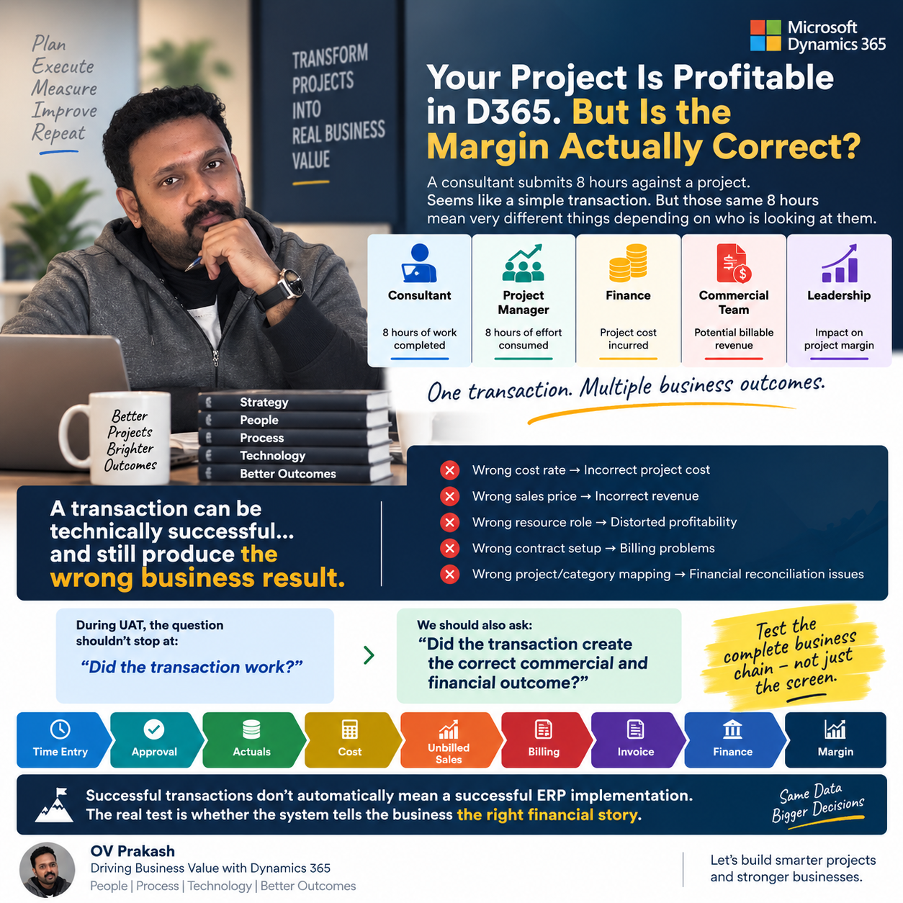

Imagine a consultant submits 8 hours against a project. It seems like a simple transaction.
But those same 8 hours mean very different things depending on who is looking at them:
- Consultant: 8 hours of work completed.
- Project Manager: 8 hours of effort consumed.
- Finance: Project cost incurred.
- Commercial Team: Potential billable revenue.
- Leadership: Impact on project margin.
A successful transaction can still tell the wrong story
This is where ERP implementations become interesting. A transaction can be technically successful and still produce the wrong business result.
- Wrong cost rate → Incorrect project cost.
- Wrong sales price → Incorrect billable value or revenue expectation.
- Wrong resource role → Distorted profitability.
- Wrong contract setup → Billing problems.
- Wrong project or category mapping → Financial reconciliation issues.
The approval may be complete, the record may exist and the screen may show no error. None of those results, on its own, proves that the business can rely on the margin.
Ask a stronger UAT question
When we perform user acceptance testing in Dynamics 365 Project Operations, I believe the question should go beyond:
We should also ask:
That changes the way we design testing. Each scenario needs an expected business outcome that the project, commercial and finance teams agree before the transaction is entered.
Follow the complete business chain
Testing only Time Entry → Submit → Approve confirms an important operational step. End-to-end UAT needs to follow what happens next:
Use this as a business validation flow. The applicable steps and timing depend on the deployment, contract and billing model; not every approved hour becomes an invoice line or recognized revenue immediately.
Make the eight-hour scenario measurable
Start with a known project, resource, role, date, category and contract. Agree the applicable cost and sales rates, billability and expected treatment with the business owners.
- Validate the input. Confirm that the time belongs to the correct project and task and follows the expected approval route.
- Check the actuals and values. Trace the approved entry to the relevant records and compare quantities, rates, currency and amounts against the agreed expectation.
- Follow the commercial outcome. Check what is billable, what remains unbilled and how the contract determines billing eligibility.
- Reconcile with Finance. Where Finance integration applies, validate the downstream accounting treatment and investigate differences instead of treating transfer success as reconciliation.
- Explain the margin. Confirm which cost and revenue measures the report uses, the reporting period and whether the result matches the agreed business definition.
For a simple time-and-materials illustration, eight hours at an agreed cost rate of 100 and sales rate of 150 imply a cost of 800 and potential billable value of 1,200 in the same currency. Those figures provide a test expectation; they do not, by themselves, establish recognized revenue or final project margin.
Test the exceptions that change the outcome
Include non-billable time, corrected entries, rate changes and contract-specific billing conditions. These scenarios reveal whether the business result remains correct when the transaction is less straightforward.
Evidence should connect the original entry to its downstream records and explain any differences. A set of successful screenshots is less useful than a traceable result that Project Management, Commercial and Finance can reconcile together.
My perspective
ERP UAT should give leaders confidence in the decisions they will make using the system. A profitability report is useful only when the business understands and trusts the transactions, rates and rules behind it.
How far does your ERP UAT go — transaction success or end-to-end financial outcome?
Share your perspective
How far does your ERP UAT go? Send your comment privately to OV Prakash by email. Comments are not published on this page.